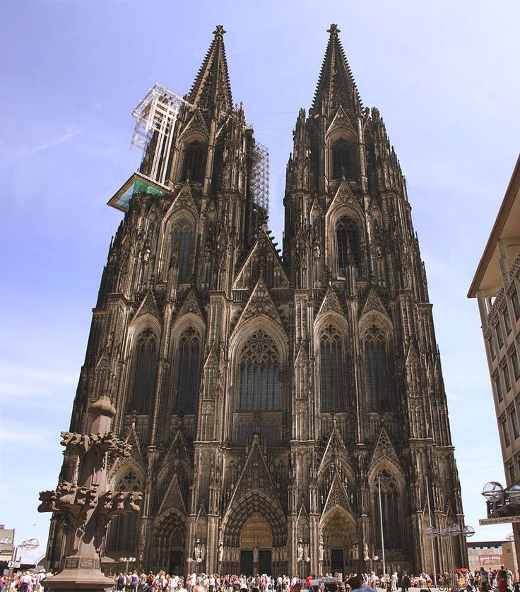
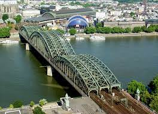

Pontos Turísicos
Pontos Turisticos de Cologne
Catedral de Cologne
A Catedral de Colônia é uma das maiores catedrais católicas romanas no mundo. Ela foi construída entre 1248 e 1880 para abrigar o precioso relicário dos três reis magos. A catedral tem 157 metros de altura e é uma das atrações mais famosas da cidade.
Hohenzollernbrücke
A Hohenzollernbrücke é uma ponte que foi construída entre os anos de 1907 e 1911, e liga o Centro Histórico à região de Colônia que concentra a maior parte dos comércios e áreas mais modernas. Chegou a ser destruída em 1945, durante a Segunda Guerra Mundial. Antes de sua destruição, trens e carros passavam livremente por este que é um dos cartões postais da cidade de Colônia.